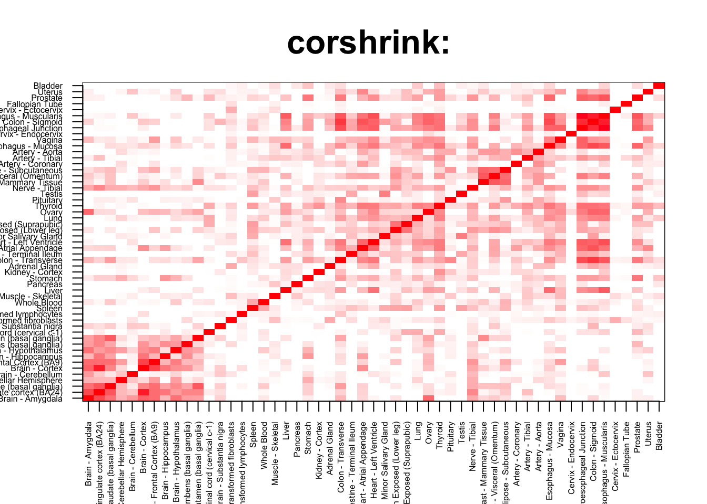
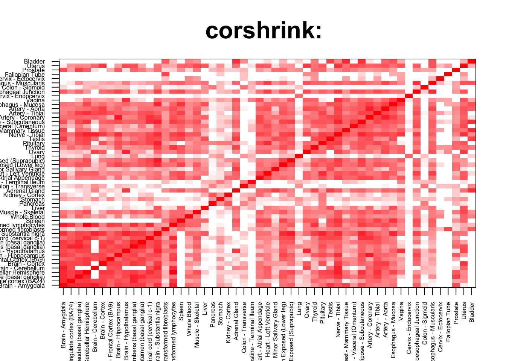

rm(list=ls())
corshrink_data <- get(load("../output/ash_cor_only_voom_pearson_normal_gtex_tissues.rda"))
cor_data <- get(load("../output/cor_tissues_non_ash_voom_pearson.rda"))common_samples <- get(load("../output/common_samples.rda"))
tissue_labels <- read.table(file = "../data/GTEX_V6/samples_id.txt")[,3]
#library(data.table)
#data <- data.frame(fread("../data/GTEX_V6/cis_gene_expression.txt"))
#matdata <- t(data[,-c(1,2)])
gene_names <- as.character(read.table(file = "../data/GTEX_V6/gene_names_GTEX_V6.txt")[,1])
gene_names_1 <- as.character(sapply(gene_names, function(x) return(strsplit(x, "[.]")[[1]][1])))
U <- unique(tissue_labels)tab <- array(0, dim(corshrink_data)[3])
esophagus_colon_set <- match(c("Esophagus - Gastroesophageal Junction", "Colon - Sigmoid", "Esophagus - Muscularis"), U)
for(m in 1:dim(corshrink_data)[3]){
temp <- corshrink_data[esophagus_colon_set, esophagus_colon_set, m]
temp1 <- corshrink_data[order_index[-(1:13)], order_index[-(1:13)],m]
tab[m] <- median(temp[row(temp) > col(temp)]) - median(temp1[row(temp1) > col(temp1)])
}
ordering_high <- order(tab, decreasing = TRUE)[1:100]
ordering_low <- order(tab, decreasing = FALSE)[1:100]top_gene <- gene_names_1[ordering_high[1]]
col=c(rev(rgb(seq(1,0,length=1000),1,seq(1,0,length=1000))),
rgb(1,seq(1,0,length=1000),seq(1,0,length=1000)))
image(as.matrix(corshrink_data[order_index,order_index, ordering_high[1]]),
col=col, main=paste0("corshrink: "), cex.main=2,
xaxt = "n", yaxt = "n", zlim=c(-1,1))
axis(1, at = seq(0, 1, length.out = 53), labels = U[order_index], las=2, cex.axis = 0.5)
axis(2, at = seq(0, 1, length.out = 53), labels = U[order_index], las=2, cex.axis = 0.5)
bottom_gene <- gene_names_1[ordering_low[1]]
col=c(rev(rgb(seq(1,0,length=1000),1,seq(1,0,length=1000))),
rgb(1,seq(1,0,length=1000),seq(1,0,length=1000)))
image(as.matrix(corshrink_data[order_index,order_index, ordering_low[1]]),
col=col, main=paste0("corshrink: "), cex.main=2,
xaxt = "n", yaxt = "n", zlim=c(-1,1))
axis(1, at = seq(0, 1, length.out = 53), labels = U[order_index], las=2, cex.axis = 0.5)
axis(2, at = seq(0, 1, length.out = 53), labels = U[order_index], las=2, cex.axis = 0.5)
high_esophagus_colon_genes <- gene_names_1[ordering_high]
low_esophagus_colon_genes <- gene_names_1[ordering_low]
write.table(cbind.data.frame(high_esophagus_colon_genes), quote = FALSE, file = "../utilities/esophagus_colon/high_esophagus_colon.txt", row.names = FALSE, col.names = FALSE)
write.table(cbind.data.frame(low_esophagus_colon_genes), quote = FALSE, file = "../utilities/esophagus_colon/low_esophagus_colon.txt", row.names = FALSE, col.names = FALSE)tab <- read.delim("../utilities/esophagus_colon/pathway_high.tab")
head(cbind.data.frame(tab$pathway, tab$q.value), 10)## tab$pathway
## 1 Oxidative Stress Pathway (Erythrocyte)
## 2 Pathway_PA165980337
## 3 Oxidative Stress Pathway (Erythrocyte)
## 4 Oxidative Stress Regulatory Pathway (Erythrocyte)
## 5 p53 pathway
## 6 Cellular responses to stress
## 7 Regulation of lipid metabolism by Peroxisome proliferator-activated receptor alpha (PPARalpha)
## 8 RIP-mediated NFkB activation via ZBP1
## 9 TRAF6 mediated NF-kB activation
## 10 ZBP1(DAI) mediated induction of type I IFNs
## tab$q.value
## 1 0.008311781
## 2 0.008311781
## 3 0.008311781
## 4 0.021596418
## 5 0.097959927
## 6 0.097959927
## 7 0.097959927
## 8 0.097959927
## 9 0.097959927
## 10 0.097959927tab <- read.delim("../utilities/esophagus_colon/GO_high.tab")
head(cbind.data.frame(tab$term_name, tab$q.value), 10)## tab$term_name tab$q.value
## 1 cytoplasmic part 0.0001350927
## 2 cytosol 0.0001333920
## 3 cytoplasm 0.0002382135
## 4 cuticle development 0.0111058003
## 5 protein homodimerization activity 0.0174442171
## 6 ruffle 0.0130258464
## 7 auditory receptor cell stereocilium organization 0.1355638666
## 8 NADP binding 0.0207771800
## 9 hydrogen peroxide biosynthetic process 0.1052506873
## 10 small molecule binding 0.0149310882tab <- read.delim("../utilities/esophagus_colon/pathway_low.tab")
head(cbind.data.frame(tab$pathway, tab$q.value), 10)## tab$pathway
## 1 Chk1/Chk2(Cds1) mediated inactivation of Cyclin B:Cdk1 complex
## 2 the 41bb-dependent immune response
## 3 atm signaling pathway
## 4 Direct p53 effectors
## 5 Formation of the cornified envelope
## 6 Alpha6Beta4Integrin
## 7 cell cycle: g2/m checkpoint
## 8 Acyl chain remodelling of PS
## 9 Myometrial Relaxation and Contraction Pathways
## 10 Glucocorticoid receptor regulatory network
## tab$q.value
## 1 0.06964467
## 2 0.06964467
## 3 0.06964467
## 4 0.06964467
## 5 0.06964467
## 6 0.06964467
## 7 0.06964467
## 8 0.06964467
## 9 0.06964467
## 10 0.07239866tab <- read.delim("../utilities/esophagus_colon/GO_low.tab")
head(cbind.data.frame(tab$term_name, tab$q.value), 10)## tab$term_name
## 1 movement of cell or subcellular component
## 2 single-organism developmental process
## 3 protein binding involved in cell adhesion
## 4 tissue development
## 5 cell adhesion
## 6 regulation of transcription from RNA polymerase II promoter in response to stress
## 7 anatomical structure development
## 8 single-organism cellular process
## 9 regulation of locomotion
## 10 regulation of DNA-templated transcription in response to stress
## tab$q.value
## 1 0.0013142456
## 2 0.0007672473
## 3 0.0009977507
## 4 0.0030974124
## 5 0.0010470077
## 6 0.0136518200
## 7 0.0013049617
## 8 0.0013049617
## 9 0.0062343164
## 10 0.0178470306This R Markdown site was created with workflowr